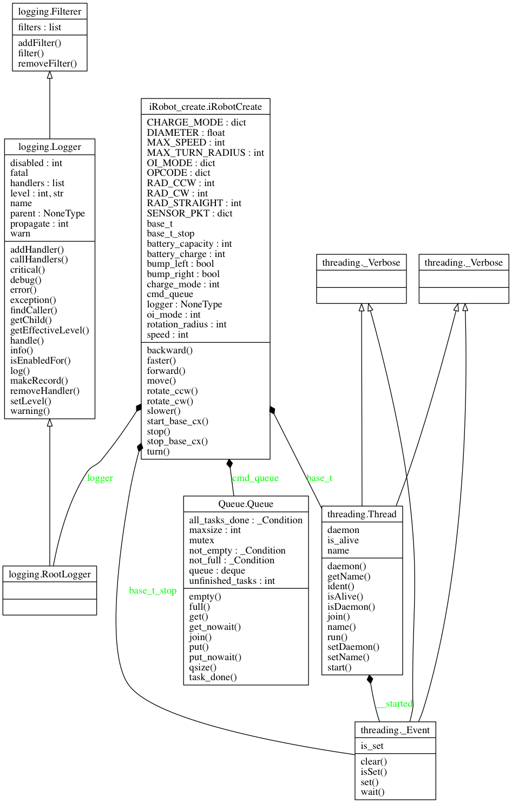

iRobot Create module¶
This module allows for the control of an iRobot Create base.
It is expected to be run on the iRobot’s computer itself, where serial commands are sent to the base. It is a superclass of Robot, which defines any and all hardwre aspects of the robot control.
The ‘base’ is considered to be simply the iRobot Create’s robotic chassis. Any other reference to the iRobot Create nominally includes the additional aspects of the robot (i.e. computer, camera, actuators).
- class iRobotCreate[source]¶
Bases: object
Definition and implementation of iRobot Create functionality.
Largely controls movement of the robot, but also provides interfaces for the robot’s bump and cliff sensors.
- DIAMETER¶
float
Diameter of the circular robot in meters.
- MAX_SPEED¶
float
Maximum linear speed in mm/s.
- MAX_TURN_RADIUS¶
float
Maximum radius of the turning circle in mm.
- RAD_STRAIGHT¶
float
Special radius for linear movement.
- RAD_CW¶
float
Special radius of a turning circle for in-place clockwise rotation.
- RAD_CCW¶
float
Special radius of a turning circle for in-place counterclockwise rotation.
- OPCODE¶
dict
All opcodes required to communicate with the iRobot Create.
- SENSOR_PKT¶
dict
Identifiers for each sensor packet to be received from the iRobot Create.
- CHARGE_MODE¶
dict
Identifiers for each charging mode.
- OI_MODE¶
dict
Identifiers for each operation mode.
- CHARGE_MODE = {'none': 0, 'full': 2, 'fault': 5, 'reconditioning': 1, 'waiting': 4, 'trickle': 3}
- DIAMETER = 0.34
- MAX_SPEED = 500
- MAX_TURN_RADIUS = 2000
- OI_MODE = {'passive': 1, 'safe': 2, 'off': 0, 'full': 3}
- OPCODE = {'baud': 129, 'LEDs': 139, 'full': 132, 'stream': 148, 'demo': 136, 'safe': 131, 'spot': 134, 'stream_toggle': 150, 'cover-and-dock': 143, 'sensors': 142, 'drive-direct': 145, 'query-list': 149, 'cover': 135, 'drive': 137, 'start': 128}
- RAD_CCW = 1
- RAD_CW = 65535
- RAD_STRAIGHT = 32767
- SENSOR_PKT = {'OI-mode': 35, 'wall': 8, 'cliff-front-left-signal': 29, 'voltage': 22, 'angle': 20, 'current': 23, 'cliff-front-right': 11, 'temperature': 24, 'bump-wheel-drop': 7, 'cliff-right-signal': 31, 'buttons': 18, 'charge': 25, 'charging': 21, 'cliff-front-left': 10, 'cliff-left-signal': 28, 'IR': 17, 'cliff-front-right-signal': 30, 'capacity': 26, 'distance': 19, 'virtual-wall': 13, 'cliff-right': 12, 'overcurrent': 14, 'wall-signal': 27, 'cliff-left': 9}
- faster(step=100)[source]¶
Increase iRobot create speed.
Parameters: step (int.) – speed step size increase.
- move()[source]¶
Move based on robot’s speed and radius.
Returns: A string of drive commands as hex characters. Return type: str
- slower(step=100)[source]¶
Decrease iRobot create speed.
Parameters: step (int.) – speed step size increase.
- turn(radius)[source]¶
Move in a circle.
Parameters: radius (float) – Longer radii make Create drive straighter, while shorter radii make the Create turn more. The radius is measured from the center of the turning circle to the center of Create.
A Drive command with a positive velocity and a positive radius makes Create drive forward while turning toward the left. A negative radius makes Create turn toward the right.